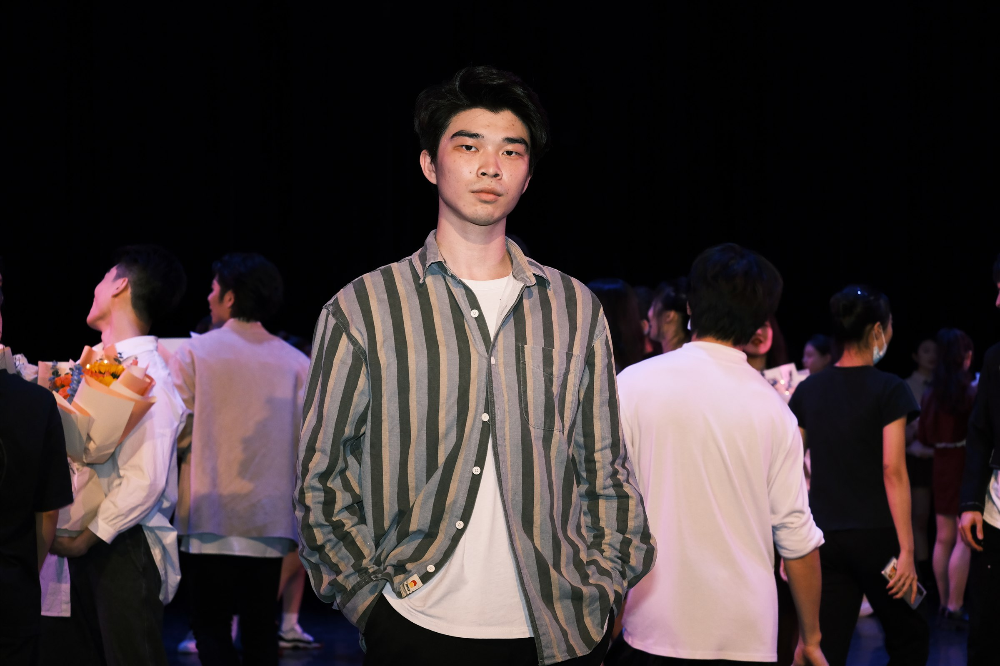

SELECTED WORK
代表案例
账号增长 · 系列内容 · AI 实战


03 · AI 交互作品
富士 X-S10 · 3D 拆解
定义相机展示与交互需求，借助 Codex 实现可旋转、缩放、拆解的 3D 网页。
旋转 · 缩放 · 拆解可操作的相机展示
进入 3D 交互体验 ↗

职业履历 · 从近到早
工作与项目经历
短视频编导与运营
2025—2026
2025.07 — 2026.11职业经历薛辉职业技术学校
短视频编导 · Allin 拆片分享与内容制作
学习工具账号与 Allin 拆片会
主要成绩
- 拆片七连冠：连续七期获得 Allin 拆片会内部评审第一，将选题、叙事与表达方法整理为完整课件并现场分享。
- 方法沉淀：以《我多想回到那一天》《AI 出爆款全流程》等专题展示从叙事拆解、提示词提炼到系列创作的方法。
- 节目与活动交付：与团队共同访谈薛辉，参与播客、Allin 大 V 分享会及校友会录制；负责 2026 年 1 月 25 日首播现场宣传素材的采集与留存。
2024
2024.12 — 2025.03职业经历佛山市福盛隆文化传媒有限公司
短视频运营 · 短视频策划、拍摄与账号运营
主要成绩
- 内容交付：产出视频选题与文案，完成现场置景及出镜引导，配合视频录制、发布与反馈复盘。
2024.09 — 2024.12职业经历深圳市获客文化传媒有限公司
新媒体运营 · 知识付费 IP 矩阵起号与运营
「零粉冷起号10w粉」账号与数据
主要成绩
- 单月涨粉 10 万：从零运营知识付费 IP 矩阵账号「家庭智慧看少文」，2024 年 10 月自然月涨粉 10 万。
- 系列选题落地：针对原有选题分散、难以延展的问题，提出围绕亲子观念差异与沟通误解的系列，经团队选题会通过并实拍执行。
- 内容生产交付：负责访谈拍摄、剪辑发布，参与投流与数据复盘，协助引流、直播执行及千川素材制作。
2019—2023
2019 — 2023专业基础星海音乐学院
舞蹈与音乐教育 · 本科 · 专业学习与早期实践
演出现场与演职证明
学习与实践
- 舞台演出：2021年6月参与大型情景史诗《伟大征程》排练与演出，地点为国家体育场（鸟巢）。
- 专业学习：2019—2023年就读星海音乐学院舞蹈与音乐教育专业，完成本科阶段学习。
- 舞蹈教学：2020年12月至2023年12月教授基本功与考级班，承担示范、讲解及动作纠正。
更多作品
内容制作能力
账号运营与选题
矩阵起号 / 系列内容从零运营知识付费矩阵号，把亲子沟通议题整理为可持续拍摄的系列选题，推进从策划到发布。
拍摄与出镜引导
置景拍摄 / 人物表达完成现场置景、拍摄执行与出镜引导，结合舞台表达与现场拍摄经验处理构图、动作及人物状态。
剪辑与运营复盘
内容发布 / 直播配合承担视频剪辑、发布和账号数据复盘，具备千川投流素材制作及直播辅助经验。
AI 辅助内容策划
选题整理 / 方法复用将内容分析思路整理为专用智能体，辅助选题与内容拆解；策划判断与最终表达由本人把关。
联系与简历
1150528414@qq.com
打开打印窗口后，可选择“另存为 PDF”。